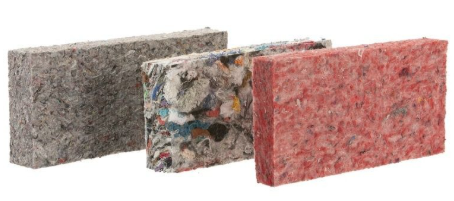

|
El nombre se eligió por su relación directa con "Brick" (ladrillo). Es una adaptación corta y moderna que simboliza la nueva era de la construcción.
QO representa el enfoque humano y ecológico: no es un bloque cualquiera, es una solución de diseño para interiores que da un nuevo propósito a la ropa en desuso.
Desarrollar ladrillos ecológicos a partir de ropa en desuso, transformando residuos textiles en materiales de construcción funcionales, con el fin de reducir el impacto ambiental y fomentar el uso de alternativas sostenibles.
Ser una empresa reconocida en el estado por innovar en la fabricación de materiales ecológicos, posicionando nuestros ladrillos como una solución sustentable en diversos espacios de diseño de interiores.
"Convertimos fibras de ropa en desuso en ladrillos sólidos para diseño de interiores, dándoles una segunda vida útil en muros decorativos y oficinas."
Proceso: Recolección → Trituración → Mezcla con polímeros → Compactación.

El proyecto BRIQO surge ante el impacto ambiental de la industria textil, responsable del 20% de las aguas residuales y el 10% de las emisiones de carbono globales.
"Cada segundo, el equivalente a un camión de basura lleno de ropa es desechado o incinerado en el mundo."
Implementamos soluciones de economía circular que transforman estos residuos en materiales de construcción, frenando la acumulación en vertederos provocada por el "fast fashion".
Residuos textiles anuales a nivel mundial.
De las aguas residuales provienen del sector textil.
De los materiales textiles no se reciclan actualmente.
Personas sin acceso a recolección de residuos adecuada.
Ofrecemos una alternativa innovadora mediante la creación de ladrillos ecológicos elaborados a partir de fibra de ropa en desuso.
Funcionalidad, diseño y responsabilidad ambiental en un solo producto, respondiendo a la necesidad de materiales sostenibles.
Transformamos residuos textiles en un recurso útil, permitiendo su reincorporación en un nuevo ciclo productivo diferenciado de los materiales tradicionales.
No solo es un ladrillo decorativo; es una solución que se adapta a las tendencias modernas que priorizan lo ecológico y lo original.
Convertimos un problema ambiental en una oportunidad para crear productos funcionales, combinando creatividad, utilidad y compromiso ambiental.
Dirigido a personas y organizaciones pertenecientes al nivel socioeconómico C+ (medio-alto), que buscan soluciones innovadoras para viviendas, cafeterías, hoteles boutique, oficinas y proyectos de remodelación.
Individuos de entre 30 y 65 años, propietarios interesados en mejorar la estética mediante productos ecológicos. Incluye también a profesionales como arquitectos y diseñadores, quienes actúan como prescriptores clave.
La zona céntrica de Puebla concentra una gran cantidad de inmuebles habitacionales, comerciales y turísticos, lo que propicia una renovación constante y una demanda creciente de materiales que integren diseño y funcionalidad.
Factores de Compra:
"BRIQO se percibe no solo como un elemento decorativo, sino como una inversión en estética y responsabilidad ambiental."